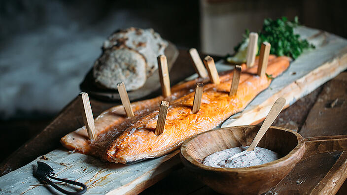

Viking salmon with flatbread and skagen sauce

This meal will provide you with energy for whatever life has in store for you. Even a Viking raid!
“We tend to think of Vikings as ferocious warriors with carnivorous tastes, but the real Viking diet was surprisingly light and nutritious. They ate berries, vegetable soups and barley risottos, and something like this simple roasted salmon with flatbreads might have been just the kind of meal a terrifying Viking might have loved between raiding parties.” Adam Liaw, Destination Flavour Scandinavia
Ingredients
- side of salmon, skin on, pin-boned
- sea salt flakes, to season
- watercress, to serve
Skagen Sauce
- (½ cup) mayonnaise
- sour cream or crème fraiche
- Dijon mustard
- finely chopped dill
- (¼ cup) whitefish or salmon roe
- finely grated zest of 1 lemon
- juice of ½ lemon
Viking Flatbread
- (2 cups) plain flour
- (½ cup) rye flour
- (½ cup) spelt flour
- (1½ cups) buttermilk
- salt